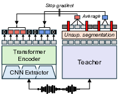
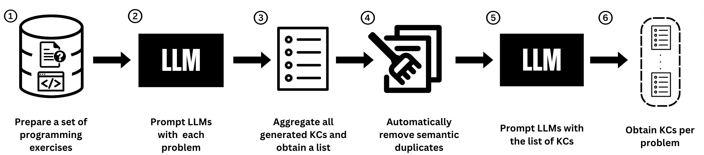

|
Ethan Chen
Hi, I'm currently pursuing my M.S. in Computer Science and Engineering at UC
San Diego. I do research in Vision-Language-Action models at the
Autonomous Vehicle Lab, supervised by
Professor Henrik Christensen.
I graduated with a Bachelor's in CS and Statistics from UC Berkeley in May
2025. There, I did research at the
Berkeley Artificial Intelligence Research Lab, where I was advised by Professor Gopala Anumanchipalli.
I've had the opportunity to work at
Kognitos (Series B) as a Member of
Technical Staff Intern and at
Amazon SageMaker, as a Software
Development Engineer Intern.
Email /
LinkedIn /
Google Scholar
/
GitHub
|
|
|

|
Sylber: Syllabic Embedding Representation of Speech from Raw Audio
Cheol Jun Cho, Nicholas Lee, Akshat Gupta, Dhruv Agarwal,
Ethan Chen, Alan W. Black, Gopala Anumanchipalli
ICLR, 2025
code
|
|

|
LLM-KCI: Leveraging Large Language Models to Identify Programming Knowledge
Components
Rose Niousha, Abigail O'Neill*, Ethan Chen*, Vedansh Malhotra,
Bita Akram, Narges Norouzi
SIGCSE TS Posters, 2025
conference poster
|
|
{kind=link}